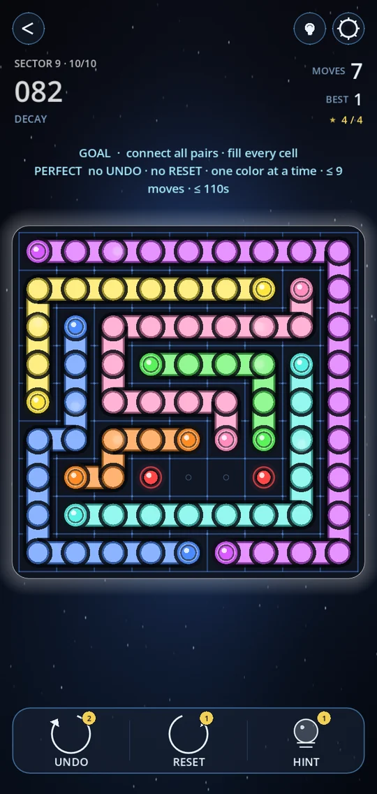
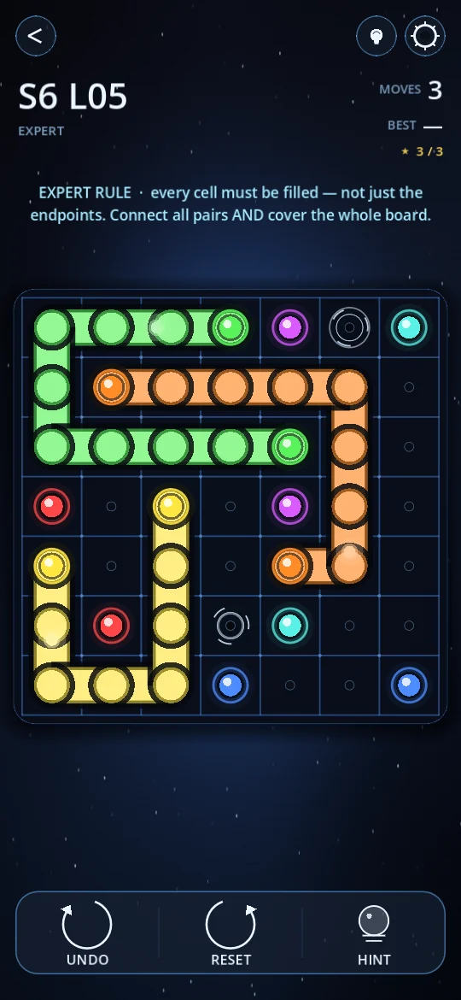

📅 16. November 2026 · ⏱ 6 Min. Lesezeit · ✍️ Grounded Studio
Du kennst die Grundlagen: am Rand beginnen, erzwungene Züge machen, nie eine Sackgasse zurücklassen. Wenn nicht, starte mit unserem Einsteiger-Leitfaden für Flow-Puzzles. Dieser hier ist für die Felder, auf denen diese Tipps nicht mehr reichen: Raster von 9×9 und 10×10, acht oder mehr Farben und Level, in denen jedes Feld gefüllt werden muss.
Jede Technik unten stellt im Grunde dieselbe Frage: Was kann nicht stimmen? Auf einem schweren Feld siehst du den richtigen Zug selten direkt. Du siehst die falschen, und der richtige ist das, was übrig bleibt.


Sobald ein paar Linien liegen, zerfällt das Feld in leere Bereiche. Betrachte jeden davon als eigenes kleines Rätsel. Welche Punkte liegen darin? Welche Linien kommen noch hinein, und durch wie viele Öffnungen? Ein Bereich ohne Punkte und ohne Zugang ist bereits ein Fehler. Siehst du das früh, verhinderst du, dass du eine Linie fertig ziehst und erst dann merkst, dass eine Ecke nie mehr erreichbar ist.
Eine Gruppe leerer Felder mit nur einer Öffnung kann nicht von einer durchlaufenden Linie gefüllt werden, denn so eine Linie braucht einen Ein- und einen Ausgang. Auf einem Level, in dem jedes Feld gefüllt werden muss, muss so eine Kammer also ein Linienende enthalten: einen Punkt, dessen Linie darin beginnt oder endet. Liegt kein Punkt darin, war der Zug falsch, der die Kammer geschaffen hat. Diese Regel allein löst überraschend viele „Ich hänge fest“-Momente.
Ein leeres Eckfeld hat nur zwei Nachbarn. Eine Linie, die es füllt, muss beide nutzen. Sobald einer dieser beiden Nachbarn von einer Linie belegt ist, die nicht in die Ecke abbiegen kann, ist die Ecke tot, es sei denn, ein Punkt liegt darin. Geh nach ein paar Zügen die Ecken durch; sie sind die billigsten Felder zum Prüfen.
Bevor du eine lange Linie festlegst, prüfe jede andere Farbe: Können ihre beiden Punkte einander noch erreichen? Eine Linie, die das Feld in zwei Hälften teilt, mit einem blauen Punkt auf jeder Seite, kann nicht Teil der Lösung sein. Auf großen Feldern ist das der häufigste versteckte Fehler, weil die trennende Linie für sich genommen oft völlig vernünftig aussieht.
Wollen zwei Farben dieselbe Lücke von einem Feld, nimm nicht die, die schöner aussieht. Frag, welche Farbe einen anderen Weg hat. Die Farbe ohne Alternative bekommt die Lücke, die andere muss außen herum. Hat keine von beiden eine Alternative, ist ein früherer Zug falsch.
In Leveln, in denen jedes Feld gefüllt werden muss, ist leerer Raum kein freier Raum. Ein langer Gang am Rand muss von jemandem genutzt werden. Zähle, welche Linien ihn erreichen können. Kann es nur eine Farbe, gehört sie dorthin, auch wenn ihre Punkte direkt nebeneinander liegen. Kurze, bequeme Verbindungen sind in Füll-Leveln genau deshalb oft falsch.
Paare, deren Punkte weit auseinanderliegen, haben die wenigsten sinnvollen Routen, wenn das Feld voller wird, und schränken damit alles andere ein. Kurze Paare passen am Ende meist noch dazwischen. Weißt du nicht, wo du anfangen sollst, skizziere die Route des weitesten Paares außen herum und schau, was übrig bleibt.
Manchmal musst du etwas ausprobieren. Tu es mit Plan: Mach einen Zug und folge nur den Zügen, die er erzwingt, drei oder vier Schritte tief. Endet diese Kette in einer Sackgasse, einem getrennten Paar oder einer geschlossenen Kammer, war der Zug falsch und die andere Möglichkeit ist richtig. Mach ihn rückgängig und nimm sie. Das ist Logik, kein Raten: Du beweist, dass ein Zug falsch ist. Unser Solver macht dasselbe, wenn er bewertet, wie schwer ein Level ist.
Das Tagesrätsel im Browser ist ein gutes Aufwärmen: ein Feld pro Tag, für alle dasselbe. Für echtes Training auf großen Feldern endet das Paket Klassisch von Circuit Trace bei 10×10, Experte setzt dich in ein zufälliges schweres Level und Arcade stapelt alle Mechaniken auf einmal.
Die Feldgröße, die Zahl der Farben und die Regel, dass jedes Feld gefüllt werden muss. Schwere Rätsel haben am Anfang wenige erzwungene Züge, du musst also überlegen, was nicht stimmen kann.
Nein. Einen Zug ausprobieren und verfolgen, was daraus folgt, ist eine normale logische Technik. Ziel ist, einen Zug als falsch zu beweisen, nicht zufällig auf die Lösung zu stoßen.
Zähle seine Öffnungen und die Punkte darin. Ein Bereich ohne Punkte braucht mindestens zwei Öffnungen, damit eine Linie hindurchlaufen und ihn füllen kann.